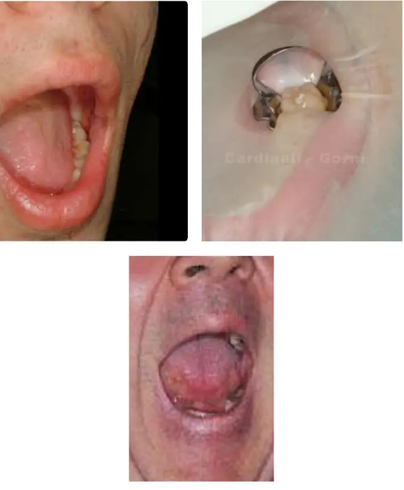

نسخه استخراجشده؛ ترجمه یا تأیید علمی انجام نشده است. وضعیت: captured
ترمیم کلاس II مولر اول پایین را با رول پنبه شروع کردهای. آب توربین به حلق بیمار میرود و سرفه میکند، زبانش رول لینگوال را کنار میزند و درست پس از زدن باندینگ، بزاق روی دیوارهی جینجیوال میآید. این جلسه کدام هدفهای ایزولاسیون را از دست داده است؟
ایزولاسیون میدان کار سه هدف دارد. هر ابزاری را که برمیداری، با همین سه هدف بسنج:
پیشگیری از آسیب به همان اندازه که به خود ابزار بستگی دارد، به شیوهی به کار بردنش هم وابسته است. رابردمی که بد گذاشته شده، مثلاً ورقی که روی بینی افتاده یا فکی که لثه را بریده، خودش خطر میسازد.
رابردم هر سه هدف را با هم پوشش میدهد و کاملترین روش ایزولاسیون است. رول پنبه، ساکشن و نخ رترکشن هر کدام بخشی از کار را میکنند.
رابردم را Sanford C. Barnum، دندانپزشکی در نیویورک، در ۱۸۶۴ معرفی کرد. او ورق لاستیکی را سوراخ کرد، از دندان رد کرد و با نخ ابریشمی به دندان بست تا بزاق به دندانی که پر میکرد نرسد. در سالهای بعد کلمپ، فورسپس کلمپ و پانچ آمدند و با فریم فلزی Young در ۱۹۰۱ کیت اصلی کامل شد. در ۱۹۲۳ یک انجمن دندانپزشکی در نیویورک اعلام کرد درمان ریشه باید در میدان تمیز و خشک انجام شود و رابردم بهترین راه آن است.

نکتهی طلایی: رابردم ذهنت را آزاد میکند تا روی جزئیات کار، بهویژه ساختن سطح باند، تمرکز کنی. هر چه روش حساستر به تکنیک باشد، این مزیت پررنگتر است.